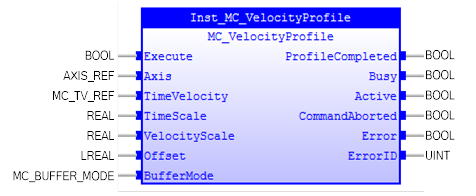
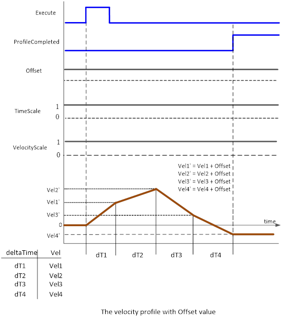
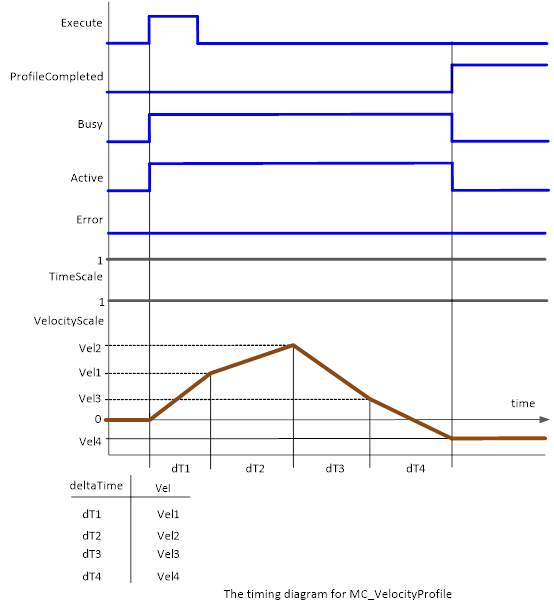

MC_VelocityProfile
Commands a time-velocity locked motion profile.

Description:
This Function Block commands a time-velocity locked motion
profile. The velocity in the final element in the profile should be maintained.
The state remains ‘ContinuousMotion’.
This functionality does not mean it runs one profile repeatedly.
It can switch between different profiles.
MC_VelocityProfile can only be executed in any of these
states: ‘SynchronizedMotion’, ‘DiscreteMotion’, ‘ContinuousMotion’, or ‘Standstill’.
On successful trigger at the rising edge of ‘Execute’, i.e. it
has no errors, the state changes to ‘ContinuousMotion’.

The velocity will be kept at the end of velocity profile.
If ‘CommandAborted’ changes to TRUE, ‘ProfileCompleted’ ,
‘Busy’, ‘Error’ and ‘Active’ are RESET.
If ‘Error’ changes to TRUE when ‘CommandAborted’ is FALSE,
‘ProfileCompleted’ , ‘Busy’ and ‘Active’ are RESET.
When BufferMode
= mcAborting,
‘Active’ changes to TRUE at the same time as ‘Busy’ changes to TRUE.
When BufferMode = mcBuffered, ‘Busy’ changes to TRUE, ’Active’
stays FALSE until the current FB is running. ’Active’ and ‘Busy’ changes to
FALSE when it is ‘Done’, ‘CommandAborted’ or ‘Error’ changes to TRUE.
A timing diagram for execution of the MC_VelocityProfile is
shown below.

Make sure the input and output parameters are of data type
indicated in the table below.
MC_TV_REF is defined as below:
The content of Time/Velocity pair may be expressed in
DeltaTime/Velocity, where Delta could be the difference in time between two
successive points. ‘Velocity’ can be a signed value.
|
STRUCT
TableStart : UDINT;
NumberOfPairs : UDINT;
END_STRUCT
|
As an alternative to this FB, CAM FB coupled to a virtual master
can be used.
Inputs/Outputs:
|
Name
|
Data Type
|
Description
|
|
INPUTS
|
|
Execute
|
BOOL
|
Start the motion at rising edge
|
|
Axis
|
AXIS_REF
|
Reference to the axis
|
|
TimeVelocity
|
MC_TV_REF
|
Reference to Time / Velocity
|
|
TimeScale
|
REAL
|
Overall time scaling factor of the
profile
|
|
VelocityScale
|
REAL
|
Overall velocity scaling factor of
the profile
|
|
Offset
|
LREAL
|
Overall offset for profile [u/s]
|
|
BufferMode
|
MC_BUFFER_MODE
|
Defines the
chronological sequence of the FB. Enumeration type:
0:
mcAborting
1: mcBuffered)
|
|
OUTPUTS
|
|
ProfileCompleted
|
BOOL
|
End
of profile reached
|
|
Busy
|
BOOL
|
The
FB is not finished and new output values are to be expected
|
|
Active
|
BOOL
|
Indicates
that the FB has control on the axis
|
|
CommandAborted
|
BOOL
|
‘Command’
is aborted by another command
|
|
Error
|
BOOL
|
Signals
that an error has occurred within the FB
|
|
ErrorID
|
UINT
|
Error
identification
|
Examples:
Example 1:
|
 Example
Example
|
|
(* Example
for MC_VelocityProfile *)
bExecute :=
FALSE
;
inst_VelocityProfile( Execute := bExecute,
(*BOOL*)
Axis
:= Axis0Ref,
(*AXIS_REF*)
TimeVelocity
:= TimeVeloTable,
(*MC_TV_REF*)
TimeScale
:= rTimeScale,
(*REAL*)
VelocityScale
:= rVeloScale,
(*REAL*)
Offset
:= lrOffsetPos,
(*LREAL*)
BufferMode
:= mcBufferMode );
(*MC_BUFFER_MODE*)
bDone := inst_VelocityProfile.ProfileCompleted ;
bBusy := inst_VelocityProfile.Busy;
bActive := inst_VelocityProfile.Active;
bCommAborted := inst_VelocityProfile.CommandAborted;
bError := inst_VelocityProfile.Error;
ErrorId := inst_VelocityProfile.ErrorID;
|
See also: